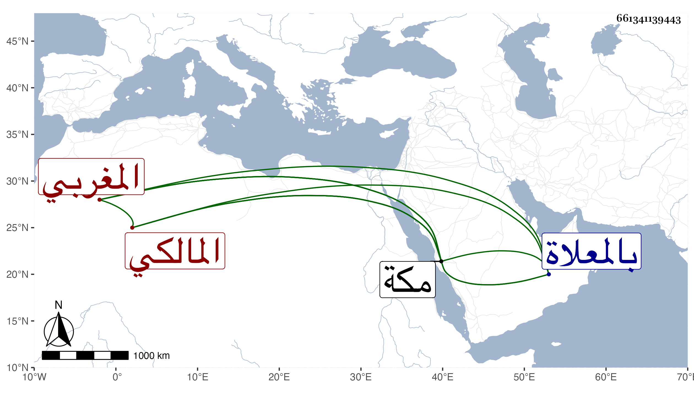

0902Sakhawi.DawLamic.ITO20230111-ara1.EIS1600.661341139443
Biography ID: 661341139443
84
محمد بن عبد الصمد المغربي المالكي ويعرف بالتازي نزيل مكة . جاور بها قريب عشرين سنة أو أزيد واشتغل بالفقه قليلا وكان يذاكر من حفظه بمواضع من موطأ إمامه رواية يحيى بن يحيى ويفهم أنه يحفظه ، وسمع بمكة من النشاوري وابن صديق وغيرهما ولم يكن بالمرضى في دينه . مات في آخر ذي الحجة سنة خمس أو أول التي بعدها برباط السدرة محل سكنه ودفن بالمعلاة ، ذكره الفاسي في مكة .
